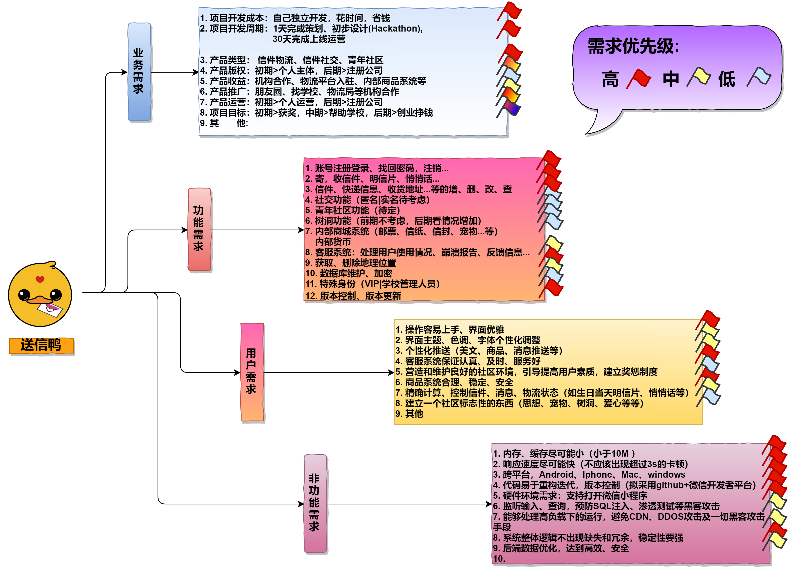

项目需求分析
——“送信鸭”小程序
## 1. 需求获取 / 需求调研：1.1 访谈
访谈法获取需求是需求获取方法中最直接、最快速的一种方法了，往往能够最直接、最具体、清晰、客观地了解目标用户的需求。
1.1.1 用户访谈
我们首先来到学校宿舍楼01栋值班室，与值班的阿姨们聊天，对她们进行了访谈，因为他们是这个项目的目标用户之一，而且这个项目立项也是受她们启发。
我们利用大约一个小时的访谈，获取了以下11条需求：
1 | 1. 希望能够有效地分发值班室收到的信件 |
1.1.2 开发人员访谈
用户访谈往往只能获取一些表面化的功能性需求，而开发人员访谈能够获得比较全面、明确、技术化的需求。
因此我们进行了一次开发人员访谈，因为时间有限，我们就只采用了队内开发人员充当不同领域的开发人员进行模拟访谈。包括以下角色：
艾山江（队长）：访谈人、记录人员
郭庭：被访谈人，前端工程师
艾尔肯：被访谈人，后端工程师
阿卜杜拉：被访谈人，测试工程师
经过一个小时的访谈及讨论，又得到了以下需求：
1 | 1. 界面优雅、操作易懂、不含广告 |
1.2 市场调研 / 同类产品的需求文档
市场调研的优点在于数据的真实性、时效性，能够根据市场的现状得到真实、最新的需求。
然而，我们的“送信鸭”这个产品属于创新项目、市场上没有与之直接对应的已有产品做参考。但是，将我们把“送信鸭”的服务内容拆开为“物流”和“社交”两个方面以后就有很多已有的产品做参考了！
目前各个小程序寄主平台(微信、QQ、支付宝、头条、百度)，对于小程序还没有出现评分、评论体系，因此，我们退而求次，准备通过类似产品，即移动应用（APP）的评分、评论得到市场上关于我们这个产品的需求。
我们选取了以下三个APP进行分析：
1 | 《邮政EMS》 ：典型信件物流 |
考虑到这些APP的技术团队没有（不可能）提供他们开发时的需求文档，所以我们准备利用爬虫技术爬取这些APP的用户评论数据，从用户评论里得到用户需求。
选择评论数据来源：华为应用市场（国内市场用户量最大的安卓应用商店）
1.2.1 具体过程
由队长艾山江独立写python代码完成此部分工作。
1 | 1. 爬取数据：直接写python代码爬虫，或者利用八爪鱼、后裔采集器等信息采集工具，或者 寻找APP数据统计服务平台等。爬取结果用pandas库写入csv文件。 |
1.2.1 调研结果
需求调研结果用词云来表示如下:
图 1-1
因为时间太紧张，有些语气词没能完全过滤率掉，导致真正的关于功能的需求频率太小图片里看不清。
经过查看本地词频统计结果，我们又大致得到了一下需求及需要考虑的问题：
1 | 1. 收不到验证码，一直都没有办法注册 |
数量及其庞大！！但是需求分类可以解决这个问题。
2. 需求分类及优先级评定：
为了更精确地简化需求，我们进行了需求分类和优先级评定，对上述访谈和市场调研结果，参考国内软件需求分析人员常用的几个需求分类和等级分类，进行队内投票计算平均值的方式得到了本次项目的最终需求及需求优先级。
为了不浪费时间，我就省略过程介绍，直接把结果放出来吧！请看下图1-2：

图 1-2
3. 未来要完成的工作
获得了我们本次项目的需求以后，接下来可以进行：
* 需求开发：建模、撰写需求文档
* 需求管理：升级、维护
* 这些是以后的事儿啦，我们现在时间有限，就开始写代码吧！
4.需求分析时用到的技术和轮子
知识及技术：大三、大四选修课程学到的知识《软件需求分析》、《软件工程》、《软件测试》、《程序设计语言》
轮子：python自学了两年了，现在还在学，主要对爬虫、NLP感兴趣，也想过学一下ML,但是奈何自己数学不太好，学不进去，本次需求分析用到的代码，一部分是我在2020年03月-2020年06月撰写我的毕业论文《应用商店应用评分机制研究》，今天再改了改，维护了一下就重新用了。
4.心酸往事
本需求分析完档编写于从2020-11-28 12:00 到 2020-11-29 04:38，花费了这次比赛规定的24小时中的16个小时，几乎一半以上，可能我有点完美主义吧，不过需求分析真的是软件开发最重要的一环，我还可以更加优化的呜呜，算了抓紧时间写前端去，拜拜！


- 本文链接：https://www.yeying.tech/requirement_analysis/
- 版权声明：本博客所有文章除特别声明外，均默认采用 许可协议。
您可以点击下方按钮切换对应评论系统。
GitHub Issues